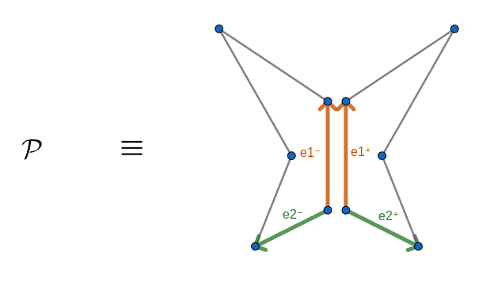
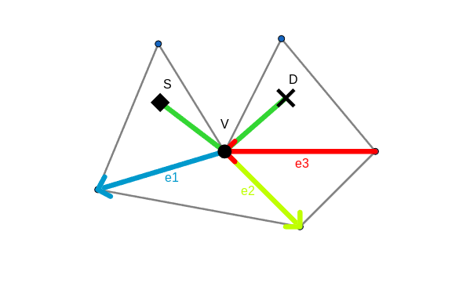
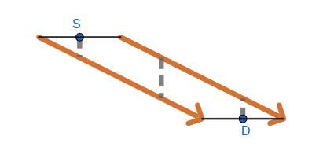
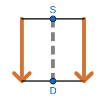
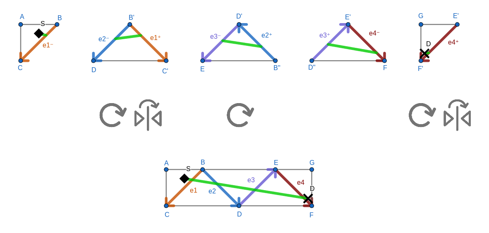
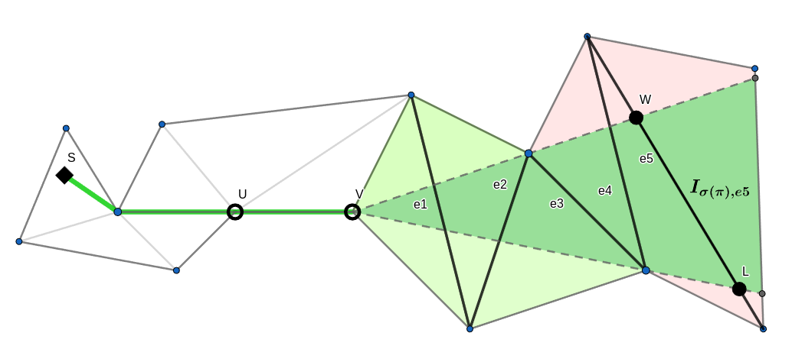
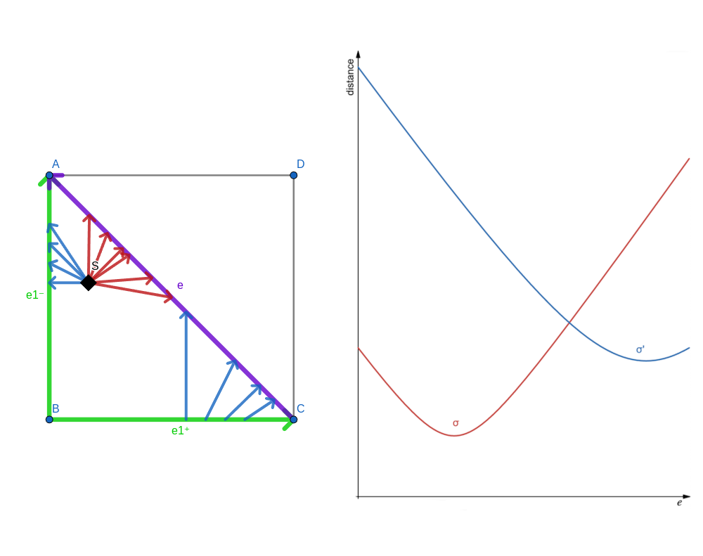

This page is the gathering of our effort put in the understanding of the "Shortest Paths in Portalgons" problem
following the reading of the paper written by Löffler, Ophelders, Staals, I.Silveira [1]
in the scope of the
"Computational Geometry INFO-F420" ULB course given by Pr. Stefan Langerman.
We present what portalgons are, what is the motivation behind them and then proceed to talk about shortest paths
in portalgons.
We then, after an interactive example, present the algorithm of Löffler et al. [1] to
compute the shortest path map of a portalgon and describe briefly the modified algorithm that is implemented
here.
We vividly encourage any interested reader to follow the reading of this page with the reading the referenced
paper [1] for further details.
A portalgon is a pair \(\mathcal{P}=(\mathcal{F},\mathcal{E})\) where \(\mathcal{F}\) is a set of
fragments and \(\mathcal{E}\) is a set of portals.
A fragment is a simple polygon.
A portal is an unordered pair \(e=(e^-,e^+)\) of (distinct) directed edges of same length across any fragments.

Figure 1. A simple example of a portalgon \(\mathcal{P}\).
Motivation
Portalgons are a generalization of polyhedral surfaces.
Any polyhedron can be converted into an equivalent portalgon taking \(\mathcal{F}\) to be the set of (polygonal)
faces of the polyhedron and placing a portal between two fragments wherever the two corresponding faces of the
original polyhedron met.
Figure 2. A portalgon equivalent to a cube and a shortest path on its surface.
The shortest path problem on the surface of a polyhedron thus reduces to a shortest path problem in a portalgon.
Since multiple routes might lead to our destination, this problem remains tedious.
However, this means that the algorithm presented in "The Discrete Geodesic Problem"[3]
to solve shortest path queries on the surface of polyhedra can be applied on portalgons if equivalent to a polyhedron.
For more general portalgons, the number of portal crossings are not necessarily bounded, as we will see later.
Pushing the idea further, portalgons allow us to represent any shape we would be able to build by gluing and folding
polygons made out of paper (note that this enables us to build more than just polyhedra).
For instance, this means that we are able to construct a portalgon that is equivalent to a Möbius strip or the
curved surface of a cylinder (the Möbius strip is constructed the same way the cylinder is, except one of
the portal edges is flipped).
Figure 4. A portalgon equivalent to the curved surface of a cylinder.
When gluing the different fragments of a portalgon \(\mathcal{P}\) together, we obtain a surface \(\Sigma\).
It turns out that \(\Sigma\) may not be embeddable in \(\mathbb{R}^2\) or \(\mathbb{R}^3\) without
self-intersections (or, as we have seen, with flat faces in \(\mathbb{R}^3\)).
We say that \(\mathcal{P}\) is a representation of \(\Sigma\).
A surface can have multiple representations.
Crucially, this last fact enables us to compute shortest paths on some curved surfaces and self-intersecting
surfaces.
Paths and Signatures
We define a path \(\pi:[0,1]\rightarrow \Sigma\) to be a continous function representing the path from a source point
\(s\in\Sigma\) to a destination point \(d\in\Sigma\) such that \(\pi(0)=s\) and \(\pi(1)=d\).
Note that the definition of a path is independent of the representation of the surface
\(\Sigma\) the path is located in (i.e. a portalgon).
For clarity, we will see paths as a collection of disconnected segments of lines from \(s\) to \(d\) in the input
portalgon.
In a portalgon \(\mathcal{P}\), a path is split into a set of maximal subpaths \(\pi_1,\ldots,\pi_k\) such that
every \(\pi_i\) is fully contained into a single fragment of \(\mathcal{P}\).
The length of a path \(\pi\) is defined to be the sum of the length of every \(\pi_i\).
This formal definition is not practical to work with programmatically.
To solve this issue, we note that a path \(\pi\) may be fully described as the sequence of vertices and portals
\(s=v_1,~e_1,\ldots,~e_k,~v_{k+1}=t\) it passes through.
Observe that in the context of shortest paths, the vertices \(v_i\neq s,t\) have to be vertices of the fragments.
We define the signature of a path, denoted \(\sigma(\pi)\) to be this sequence (without the destination).

Figure 5. An example of a path \(\pi\) from \(s\) to \(d\) with signature
\(\sigma(\pi)=s,v,e_1,e_2,e_3\).
Happiness
We define the complexity of a path \(\pi\) (in a portalgon \(\mathcal{P}\)) to be the length of its signature
\(\sigma(\pi)\).

Figure 6. An example of a shortest path that goes 3 times through the same fragment before reaching its
destination.
The example above showcases how, with a single shortest path, we might have to cross a portal multiple times before
being able to reach the destination.
In particular, since we can make the parallelogram arbitrarily long, it shows that, in general, the
number of times that a shortest path goes through a unique fragment is unbounded.
This leads us to the definition of the happiness \(\mathcal{H}(F)\) of a fragment \(F\in\mathcal{F}\).
\(\mathcal{H}(F)\) is defined to be the maximal number of times that a shortest path between any pair of points
\(p,q\in\Sigma\) crosses \(F\) (maximized over the choice of \(p\) and \(q\)).
We define the happiness \(\mathcal{H}(\mathcal{P})\) of a portalgon \(\mathcal{P}\) to be the highest
happiness over all fragments of \(\mathcal{P}\) (\(\max_{F\in\mathcal{F}}\mathcal{H}(F)\)).
A portalgon is \(h\)-happy when its happiness is at most \(h\).
We say that a portalgon is happy if it is \(\mathcal{O}(1)\)-happy.
Note that in these definitions, the happiness depends on a portalgon and not on a surface \(\Sigma\).
Indeed, as we will see, different representations of the same surface can have different
happiness.
Let \(\mathcal{P}\) be a \(h\)-happy portalgon with \(n\) vertices and \(m\) portals (\(2m\) portal edges).
At most, the complexity of a shortest path is \( \mathcal{O}(n + hm) \) (indeed, a shortest path may go through
each vertex only once and go through each portal exactly \(h\) times).
The notion of happiness has repercussions on the possible algorithms that can solve the shortest path problem:
if \(h\) is unbounded, the total number of signatures is too and simple bruteforce algorithm might not work.

Figure 7. A portalgon equivalent to the one of figure 6 but
with constant happiness.
A result of [1] is that for any portalgon \(\mathcal{P}\), there exists a portalgon
\(\mathcal{P}'\) equivalent to \(\mathcal{P}\) but with \(\mathcal{O}(1)\)-happiness.
Because the complexity of a path is \( \mathcal{O}(n + hm) \), a shortest path in a happy portalgon
would only have paths of length \( \mathcal{O}(n + m) = \mathcal{O}(n)\), which is very useful to compute
shortest paths quickly.
Embedding of a signature
Let \(\mathcal{P}=(\mathcal{F},\mathcal{E})\) be an input portalgon.
To embed a signature \(\sigma(\pi)\) in \(\mathbb{R}^2\), take the ordered sequence of portals
\(E=(e_1,e_2,\ldots e_k)\subseteq \mathcal{E}\) it contains.
Let \(F_0\) be the fragment that contains the source point.
For each portal \(e_i=(e_i^-, e_i^+)\in E\), assume that \(e_i^-\) is an edge of \(F_{i-1}\) and \(e_i^+\)
is an edge of \(F_{i}\) with \(\{F_0,\ldots,F_k\}\subseteq \mathcal{F}\).
For each edge \(e_i\in E\), we will stitch \(F_{i-1}\) with \(F_{i}\) by gluing \(e_i^-\) with \(e_i^+\) according to their direction.
This way, to embed \(F_i\), rotate it and translate it in order to align the starts of \(e_i^-\) and \(e_i^+\).
In some cases, \(F_{i-1}\) and \(F_i\) might overlap after such transformations.
If that i the case, take the reflection of \(F_i\) with \(e_i\) as the axis of symmetry.
Note that rotation, translation and refection are all isometries.

Figure 8. The embedding of a signature \(\sigma(\pi)=s,e_1,e_2,e_3,e_4\) of a path
\(\pi\) from \(s\) to \(d\).
Interactive example
Before going into the specifics of how the shortest path algorithm is implemented, we invite the reader to
design a portalgon using our tool here under.
This enables the reader to then find a shortest path between two arbitrarily chosen point in their portalgon.
Build your own portalgon
Usage of the tool:
Click on the grid and create a fragment (must be a simple polygon).
When the current fragment is done, press Next Fragment and repeat until you have finished creating
your fragments (two fragments cannot overlap).
When every fragment is created, press Next Fragment one last time and press Pick Portals.
To place a portal, click on the dominant vertex of the edge you want to select to be an end of the portal and
then select another edge (remember that the two edges of a portal must be of the same length!).
Clicking again of the dominant vertex of one of the ends of a portal toggles its direction.
When the current portal is done, click Next Portal and repeat until you are done placing portals.
When everything is done, press Next Portal one last time and click Finish. You are done!
Triangulation of your portalgon
The following zone shows a triangulated version of your portalgon (if you did not forget to validate it!).
You are now able to place two points: a source point (blue) and a destination point (red).
Note that you can change the position of the destination point at any point by simply clicking on the new
desired position.
Shortest Path
Shortest Path Map to the portals
The goal of the algorithm presented in [1] is to compute the shortest path map from a source point
\(s\in\Sigma\) (denoted \(SPM:=SPM(s)\)).
A \(SPM\) is a subdivision of \(\Sigma\) into maximally connected regions such that in all regions
\(R\in\textit{SPM}(s)\), the signature of the shortest path from \(s\) to \(p\) is the same for all \(p\in R\).
To compute the whole \(SPM\), we must start by computing \(SPM_e\) for every portal \(e\in\mathcal{E}\).
We define \(SPM_e\) to be a subdivision of \(e\) into maximally connected segments \(S\subseteq e\) where the
signature of the shortest path from \(s\) to \(p\) is the same for all \(p\in S\).
This way, \(SPM_e\) gives the shortest path from \(s\) to any point of \(e\).
Distance
Let us say that we would like to find \(SPM_e\) for some portal \(e\).
Let \(\pi\) be a shortest path from \(s\) to some point where \(e\) is the last portal in \(\sigma(\pi)\).
Let \(v\) be the last vertex in \(\sigma(\pi)\).
We define \(I_{\sigma(\pi),e}\) to be the interval of points on \(e\) that can be reached in a straight line
from \(v\) (the interval of points on \(e\) that are visible from \(v\)).

Figure 9. Example of \(I_{\sigma(\pi), e_5}\) (the interval of points between \(L\) and \(W\))
for a signature \(\sigma(\pi)=s,\ldots, v, e_1, e_2, e_3, e_4, e_5\).
We can now define the length of a shortest path of signature \(\sigma(\pi)\) from a source \(s\) to some point
\(q\in e\), given the distance from \(s\) to \(v\) (\(d(s,v)\)), as the following:
\[f_{\sigma(\pi)\mid e}:e\rightarrow \mathbb{R}\cup\{\infty\}:q\mapsto
\begin{cases}
d(s,v)+\left\|\overline{vq}\right\| & \text{if \(q\in I_{\sigma(\pi),e}\)}\\
\infty & \text{otherwise}
\end{cases}\]
The two cases are justified by the fact that, clearly, if \(q\notin I_{\sigma(\pi),e}\), \(q\) is unreachable
using the signature \(\sigma(\pi)\).
In the actual implementation of the algorithm, the distance functions \(f_{\sigma(\pi)\mid e}\) are objects
that have access to:
The signature \(\sigma(\pi)\) it is linked to.
The position of \(v\) in the embedding of the signature.
The position of both ends of \(e\) in the embedding of the signature.
\(d(s,v)\).
The interval \(I_{\sigma(\pi),e}\) it is defined on.
In particular, this means that finding the embedding of the signature \(\sigma(\pi)\) is necessary to compute
\(f_{\sigma(\pi)\mid e}\).
Given this information, a distance function may be queried for any input \(q\in e\) in \(\mathcal{O}(1)\), which
is enough to perform the operations described later on them.
Envelopes
Clearly, \(f_{\sigma(\pi)\mid e}\) is a symmetric function, increasing as the distance to its minimum increases.
Except these facts, the exact shape of a distance function \(f_{\sigma(\pi)\mid e}\) is of
no importance.
Let \(e\) be some portal.
Take every path \(\pi\) from \(s\) with a signature \(\sigma(\pi)\) that reaches \(e\).
For all of these signatures, we can plot \(f_{\sigma(\pi)\mid e}\).
The very important fact to notice is that the lower envelope of this set of functions is the \(SPM_e\)!
Indeed, the interval of \(e\) in which some signature \(\sigma\) gives a minimal distance function
\(f_{\sigma\mid e}\) is an
interval where the signature \(\sigma\) is optimal.

Figure 10. A portalgon and a collection of paths from \(s\) to \(e\) (in red) with signature
\(\sigma=s\) and a collection of paths (in blue) with a signature \(\sigma'=s,e_1\) alongside
the plot of \(f_{\sigma\mid e}\) and \(f_{\sigma'\mid e}\).
This gives a direct bruteforce algorithm to compute the \(SPM\) restricted to the edges: given a portal \(e\),
compute every possible signature that goes from \(s\) to \(e\) and compute the lower envelope of the
distance functions \(f_{\sigma(\pi)\mid e}\).
To find the shortest path from \(s\) to a point \(q\in e\), find which distance function realizes the envelope
at point \(q\) and retrieve its signature.
Note that, as shown in the previous figure, an envelope lives in the \(e\times \delta\) space, where \(\delta\)
is the distance from the source \(s\) to some point on \(e\).
Data structure to maintain a lower envelope
As hinted in the precedent section, we would like to maintain a lower envelope of a set of distance functions
\(F=\{f_{\sigma_1\mid e},f_{\sigma_2\mid e},\ldots,f_{\sigma_k\mid e}\}\) for every edge \(e\).
The authors of [1] propose an efficient data structure to do so.
First of all, note that any functions \(f\) and \(f'\) can only intersect twice because of their shape.
This data structure supports the following operations:
\(\texttt{Insert(}f\texttt{)}\): the insertion of a new function \(f_{\sigma_i\mid e}\).
\(\texttt{NextLocalMinimum(}\delta\texttt{)}\): finding the smallest local minimum larger than \( \delta \).
\(\texttt{NextVertex(}f,q\texttt{)}\): given a function \(f\) realizing the envelope at some point \(q\in e\), find the lowest intersection
\((v,f'(v))\) of \(f\) with some other function \(f'\in \text{env}\) such that \(f'(v)>f(q)\).
We represent the envelope of our functions \(f\in F\), \(\text{env}_F\) with \(\mathcal{O}(\log m)\) of these lower
envelope data structures.
Every sub-envelope \(\text{env}_i\) contains
a binary search tree of the intervals of the envelope ordered by their \(x\)-coordinates (these intervals
can be seen obtained by collapsing the functions \(f_{\sigma_j\mid e}\in\text{env}_i\) on the \(x\)-axis) and
a list of local minima, ordered by their \(y\)-coordinates.
Every envelope \(\text{env}_i\) stores the lower envelope of \(2^i\) functions from \(F\).
To handle the \(\texttt{NextLocalMinimum(}\delta\texttt{)}\) queries, we can binary search on the
\(\mathcal{O}(\log m)\) sub-envelopes \(\text{env}_i\) and find the local minimum of \(\text{env}_i\) by
binary searching its minima list.
This lets us answer such queries in \(\mathcal{O}(\log^2 m)\) time.
To tackle \(\texttt{NextVertex(}f,q\texttt{)}\) queries, we consider every \(\text{env}_i\) one by one
(remember that we have \(\mathcal{O}(\log m)\) of those).
We do a binary search on the vertices of the intervals of \(\text{env}_i\) to find the function \(f'\) that realizes
\(\text{env}_i\) at point \(q\).
Then, we walk to the right of the envelope, examining every new function \(g\) that we encounter until we have
found an intersection between some function \(g\) and \(f\) (or not, this intersection can be found
analytically).
Note that when encountering a function \(g\) that is strictly above \(f\) for its entire definition interval,
\(g\) can be deleted from \(\text{env}_i\).
We do the same on the left side and record the intersection point \(p\) with the lowest \(y\)-coordinate over
all sub-envelopes.
Clearly, answering the query in this way takes time
\[\mathcal{O}\left(\sum_{i=0}^{\mathcal{O}(\log m)}\overbrace{\left(|env_i|+ \log |env_i|\right)}^{\text{walking + binary search}}\right)=
\mathcal{O}\left(\sum_{i=0}^{\mathcal{O}(\log m)}|env_i|\right)=\mathcal{O}(\log^2 m)\]
Finally, to insert a function \(f\), create a new envelope \(\text{env}'_0\) containing only \(f\).
If there exists another envelope \(\text{env}_0\), merge the two envelopes.
Proceed recursively until every sub-envelope has a different size.
To merge two envelope at a level \(i\) (of size \(2^i\)), one can merge the local minima list in linear time and
compute the actual intervals of the envelope by walking simultaneously on \(\text{env}_i\) and \(\text{env}'_i\)
in time \(\mathcal{O}(|\text{env}_i| + |\text{env}'_i| + |\text{env}'_{i+1}|)\).
The authors then proceed to prove that the total number of intervals that are created during a sequence of \(m\)
insertions is at most \(\mathcal{O}(\lambda_4(m)\log m)\) where \(\lambda_4(m)\) is the length of some
Davenport-Schinzel sequence, the details of which are out of the scope of this interactive paper.
Instead, we use the equivalence provided in [4] to get the following bound
(\(\alpha(n)\) is the inverse Ackermann function).
\[\mathcal{O}(\lambda_4(m)\log m)=\mathcal{O}(m2^{\alpha(m)}\log m)\]
Finally, we get that inserting \(m\) functions and doing \(k\) \(\texttt{NextLocalMinimum(}\delta\texttt{)}\) and
\(\texttt{NextVertex(}f,q\texttt{)}\) queries takes time
\[\mathcal{O}(m2^{\alpha(m)}\log m + k\log^2 m)\]
The Algorithm
We use a sweep line algorithm to progressively compute the shortest path map.
Let \(\delta\) be the distance from the source point \(s\).
Instead of sweeping from left to right as is generally the case with sweep line algorithms, we here
sweep from \(\delta=0\) and progressively increase \(\delta\).
This can be seen as some form of a "continuous Dijkstra" algorithm.
The objective is to increase the height of the sweep line \( \delta \) while maintaining the shortest path map below it.
Keep in mind that we are trying to compute \(SPM_e\) for every \(e\in\mathcal{E}\).
Note that before starting the algorithm, we can assume that the input portalgon \(\mathcal{P}\) is
triangulated.
It is possible to triangulate every fragment of a portalgon by carefully replacing every edge in the classical
triangulation by a portal.
This triangulation can be found in linear time using the algorithm presented by Chazelle
([5]).
Notice that for every portal \(e\), a shortest path to \(e\) comes either from a triangle \(T_A\) or a triangle
\(T_B\).
Hence, we can split every signature that touches \(e\) before time \(\delta\) in two sets:
\(S_A(e,\delta)\) and \(S_B(e,\delta)\).
This also means that we can split \(\text{env}(e,\delta)\) (the envelope of distance functions
\(f_{\sigma_i\mid e}\) that goes to \(e\) considering only signatures that reach \(e\) in distance at most
\(\delta\)) in two envelopes: \(\text{env}_A(e,\delta)\) and \(\text{env}_B(e,\delta)\).
This way, \(\text{env}(e,\delta)\) is the lower envelope of \(\text{env}_A(e,\delta)\) and
\(\text{env}_B(e,\delta)\).
As the sweep line progresses (say that it is at height \(\delta\)), we maintain the sets \(S_A(e,\delta)\) and
\(S_B(e,\delta)\) as well as \(\text{env}^{\leq\delta}(e,\delta)\): the part of \(\text{env}(e,\delta)\) that
lies below the sweep line and \(\text{env}^{=\delta}(e,\delta)\): the intersection points of
\(\text{env}_A(e,\delta)\) and \(\text{env}_B(e,\delta)\) with the sweep line.
We store \(\text{env}^{\leq\delta}(e,\delta)\) in a binary search tree, in the same way that we did in the
data structure to maintain a lower envelope (the boundaries of each interval may move continuously with the sweep line).
We also store \(\text{env}^{=\delta}(e,\delta)\) in a binary search tree and store the functions of
\(\text{env}_A(e,\delta)\) or \(\text{env}_B(e,\delta)\) corresponding to each intersection.
We now describe the events \(\delta'>\delta\) that the sweep line works with.
Every event "belongs" to some portal \(e\) but is centralized in a global event priority queue.
\(\delta'\) is the minimum of some function \(f_{\sigma\mid e}\) for some
\(\sigma\in S_A(e,\delta)\cup S_B(e,\delta)\) (this corresponds to the
first time that \(e\) is reached using the signature \(\sigma\), a new point appears on
\(\text{env}^{=\delta}(e,\delta)\) and a new interval might appear in \(\text{env}^{\leq\delta}(e,\delta)\)).
\(\delta'\) corresponds to a vertex of \(\text{env}_A(e,\delta)\) or \(\text{env}_B(e,\delta)\)
(this corresponds to a time where a point on \(\text{env}^{=\delta}(e,\delta)\) either disappears
or the distance function corresponding to said point changes, note that this might create another
interval in \(\text{env}^{\leq\delta}(e,\delta)\)).
\(\delta'\) corresponds to an intersection between \(f_{\sigma\mid e}\in \text{env}_A(e,\delta)\) and
\(f_{\sigma'\mid e}\in \text{env}_B(e,\delta)\) where the two functions are neighbours in
\(\text{env}^{=\delta}(e,\delta)\) (in particular, their order must change in \(\text{env}^{=\delta}(e,\delta)\)).
When an event is triggered, the correct modifications to \(\text{env}^{=\delta}(e,\delta)\) and
\(\text{env}^{\leq\delta}(e,\delta)\) must be made.
Note that new events might be discovered simply by updating \(\text{env}^{=\delta}(e,\delta)\): for instance,
if a type 2 event is triggered and a function \(f'\in\text{env}_A(e,\delta)\) replaces a function
\(f\in\text{env}_A(e,\delta)\) in \(\text{env}^{=\delta}(e,\delta)\),
we could find an intersection with \(f'\) and some other function \(g\in\text{env}_B(e,\delta)\) that would
create a type 3 event.
It could also be the case that we need to remove events from the event priority queue when an event happens
(in the previous example, we could have detected an intersection between \(f\) and \(g\) above the sweep line
but since \(f'\) replaced \(f\), the previously inserted event must be removed).
These events are discovered using the methods that we defined on the lower envelope data structure.
The few examples provided in this paragraph do not reflect everything that must be taken into account to
properly maintain the information that we seek to maintain.
Finally, an event could place a new function \(f_{\sigma,e}\) from \(\text{env}_A(e,\delta)\)
(or \(\text{env}_B(e,\delta)\)) in \(\text{env}^{\leq\delta}(e,\delta)\) (which happens if
\(f_{\sigma,e}\) appears in \(\text{env}^{=\delta}(e,\delta)\) at some point \(q\in e\) that is still empty in
\(\text{env}^{\leq\delta}(e,\delta)\)).
If such a thing happens, this means that we have found a shortest path to some point of \(e\) and we must
propagate the signature \(\sigma'=\sigma,e\) to every other portal \(e'\) incident to the triangle \(T_A\)
(or \(T_B\)) by inserting \(\sigma'\) into \(S_A(e',\delta)\) (or \(S_B(e',\delta)\)).
Note that when a new signature is discovered, one must compute the embedding of said signature in order to
retrieve the position of \(v\) relative to the position of the portal \(e'\) in the embedding as well
as \(I_{\sigma,e'}\) (in order
to compute \(f_{\sigma\mid e'}\)).
What is described in the last paragraph does not allow for vertices to be added to signatures.
If one of the endpoints of \(e\) is some vertex \(a\), we can wait for \(a\) to be covered in
\(\text{env}^{\leq\delta}(e,\delta)\) and then proceed analogously to what was described previously, with
\(\sigma'=\sigma,a,e\) (and we can do the same for the other endpoint \(a'\) of \(e\)).
Note that \(d(s,a)=\delta'\), which we need to use to compute \(f_{\sigma'\mid e'}\).
To initialize the algorithm, simply put \(\sigma=s\) in the \(S_A(e,\delta)\) set of every portal \(e\)
incident to the source \(s\) (or \(S_B(e,\delta)\), depending on how we defined \(T_A\) and \(T_B\) for \(e\)).
Otherwise, \(S_A(e',\delta)\) and \(S_B(e',\delta)\) are initially empty for every other portal \(e'\).
Stop when the priority queue of events is empty.
Analysis
Let \(SPM_{\mathcal{P}}\) be the shortest path map of the whole portalgon \(\mathcal{P}\) and
\(SPM_{\partial \mathcal{P}}\)
be the shortest path map restricted to the boundary of \(\mathcal{P}\) (every portal \(e\in\mathcal{E}\),
which is what we have computed).
We can define \(SPM_{T}\) and \(SPM_{\partial T}\) analogously for a triangle \(T\in\mathcal{F}\).
The authors of [1] proceeded to prove that the total number of intervals in
\(SPM_{\partial\mathcal{P}}\) (the total number of signatures that realize some point of the envelope
\(\text{env}\)) is
\[\left|SPM_{\partial\mathcal{P}}\right|=\mathcal{O}(n^2h)\]
They then prove that the total number of events over every edge \(e\) is bounded by
\(\mathcal{O}(\lambda_{4}(n^2h))=\mathcal{O}(n^2h\cdot 2^{\alpha(n^2h)})\).
To handle an event on some portal \(e\), we use a constant number of update operations on
\(\text{env}^{\leq\delta}(e,\delta)\) and \(\text{env}^{=\delta}(e,\delta)\) and a constant number of calls to
the operations \(\texttt{Insert(}f\texttt{)}\), \(\texttt{NextLocalMinimum(}\delta\texttt{)}\) and
\(\texttt{NextVertex(}f,q\texttt{)}\).
It follows, from the analysis done in the section about the lower envelope data structure, that the cost of
handling one event is \(\mathcal{O}(\log (n^2h))\).
Since we know a bound on the total number of events, we get that the total time needed to compute
\(SPM_{\partial\mathcal{P}}\) follows.
\[\mathcal{O}(n^2h\cdot 2^{\alpha(n^2h)}\log^2 (n^2h))\]
We get that the algorithm presented in [1] finds the \(SPM_{\partial\mathcal{P}}\)
in quasi-quadratic time relative to the size of the input portalgon \(\mathcal{P}\).
Note that as expected, a bigger happiness means that the algorithm runs slower.
However, the impact of the happiness \(h\) on the running time is quasi-linear.
What we implemented
The algorithm presented in the two previous sections is not what we have implemented.
We are given a triangulated portalgon and a source \(s\).
Our algorithm is a simplified version of what is presented above.
Instead of having a full data structure to maintain a lower envelope for each portal \(e\), we have a list
\(L(e)\) of distance functions \(f_{\sigma\mid e}\) that can reach \(e\), for each portal \(e\in\mathcal{E}\).
If one wants to know which signature to take to reach some point \(q\in e\), iterate over every function
\(f_{\sigma\mid e}\in L(e)\) and compute \(\arg\min_{f\in L(e)}f(q)\).
The initialization of our algorithm is a slightly adapted version of the one presented previously.
Originally, we only have a signature \(\sigma=s\) in \(L(e)\) for every portal \(e\) incident to the triangle
in which \(s\) lies.
From there, we start the procedure of the sweep line algorithm.
An event is simply the distance \(\delta'\) at which we reach a new portal \(e\) using signature \(\sigma\), which
will propagate a new signature \(\sigma'=\sigma, e\) to \(L(e')\) for every portal \(e'\) incident to the triangle
that we are entering by touching \(e\) with the signature \(\sigma\).
To ensure that the number of events is bounded, we only add a new signature in \(L(e)\) if it lowers the
envelope at some point \(q\in e\).
Extension of the SPM to the interior
We have computed \(SPM_e\) for every portal \(e\), and in particular have the shortest path map
\(SPM_{\partial T}\) for any triangle \(T\).
To compute \(SPM_T\), the authors of [1]
propose to use the Build-Subdivision algorithm presented by [3] (Lemma 8.2).
If \(SPM_{\partial T}\) consists of \(m\) intervals, \(SPM_T\) can be computed in time \(\mathcal{O}(m\log m)\).
Since the purpose of this interactive paper was not to compute the \(SPM\) of the whole portalgon but simply to
compute shortest paths between a source \(s\) and a destination point \(d\), we propose a simple algorithm to find
such a shortest path given \(SPM_{\partial \mathcal{P}}\).
Let \(T\) be the triangle in which \(d\) lies.
For every function \(f_{\sigma\mid e}\) that is optimal on some point on the boundary of \(T\) (one per interval of
\(SPM_{\partial T}\)), verify if \(\sigma\) is a valid signature to reach \(d\).
If so, compute the length of the path (by constructing its embedding).
Remember the shortest of all of these paths.
This gives a \(\mathcal{O}(m)\) algorithm to find a shortest path given \(SPM_{\partial \mathcal{P}}\) and
the triangle \(T\) in which \(d\) lies.
Note that in the interactive example, moving \(d\) does not recompute the whole \(SPM_{\partial\mathcal{P}}\).
Conclusion
We have presented in this interactive paper a full description of what portalgons are and the important nuances
to grasp to fully understand the algorithm proposed by M. Löffler, T. Ophelders, F. Staals and R.I. Silveira
in [1].
After an interactive example, we described how to compute the \(SPM_{\partial\mathcal{P}}\) in
\(\mathcal{O}(n^2h\cdot 2^{\alpha(n^2h)}\log^2 (n^2h))\) time and proposed a simple algorithm to
use the shortest path map restricted to the boundary of \(\mathcal{P}\) to compute a shortest path between
a source \(s\) and a destination \(d\) in \(\Sigma\).
Authors
Schleusner Shan
website setup
portalgons drawings
theoretical writeup
Vannimmen Mathieu
portalgon builder
embedding implementation
shortest path algorithm
theoretical writeup
Testaert Sacha
portalgons drawings
theoretical writeup
References
[1] M. Löffler, T. Ophelders, F. Staals, R.I. Silveira, "Shortest Paths in Portalgons", arXiv:2303.08937v1 [cs.CG] 15 Mar 2023
[2] M. Löffler, T. Ophelders, R. I. Silveira, and F. Staals, “Shortest Paths in Portalgons,” in 39th International Symposium on Computational Geometry (SoCG 2023) (E. W. Chambers and J. Gudmundsson,
eds.), vol. 258 of Leibniz International Proceedings in Informatics (LIPIcs), (Dagstuhl, Germany),
pp. 48:1–48:16, Schloss Dagstuhl – Leibniz-Zentrum für Informatik, 2023.
[3] JOSEPH S. B. MITCHELL, DAVID M. MOUNT AND CHRISTOS H. PAPADIMITRIOU, "THE DISCRETE GEODESIC PROBLEM", Vol. 16, No. 4, Society for Industrial and Applied Mathematics, pp. 647-668, Aug. 1987
[4] Sharir, M. (1988). Davenport-Schinzel Sequences and their Geometric Applications. In: Earnshaw, R.A. (eds) Theoretical Foundations of Computer Graphics and CAD. NATO ASI Series, vol 40. Springer, Berlin, Heidelberg. https://doi.org/10.1007/978-3-642-83539-1_9
[5] Chazelle, B. Triangulating a simple polygon in linear time. Discrete Comput Geom 6, 485–524 (1991). https://doi.org/10.1007/BF02574703
Additional resources
[A] Wolfgang Muzler, "Shortest Paths in Polygons", Frei Universität Berlin, 22 april 2021
Maarten Löffler et al., EuroCG, 2021 april 7-9, https://www.youtube.com/watch?v=l04dpczEGqU
Credits
Visuals realised with GeoGebra.
Visuals and descriptive work are inspired by [1].